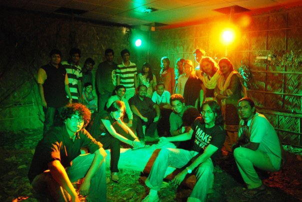
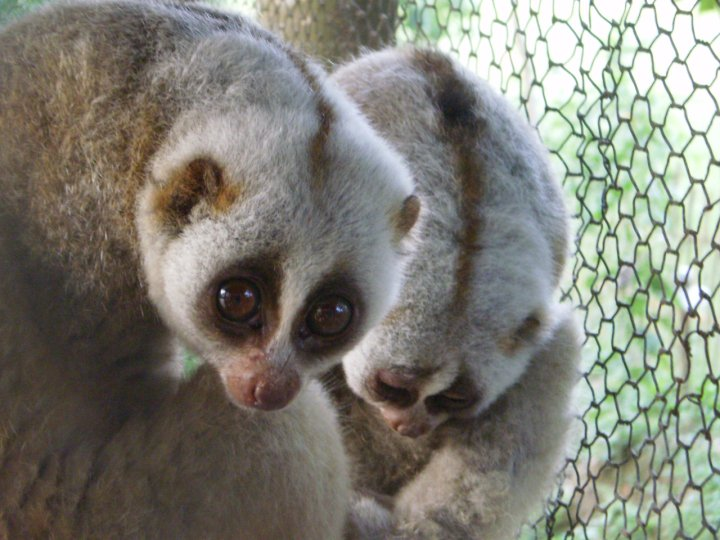
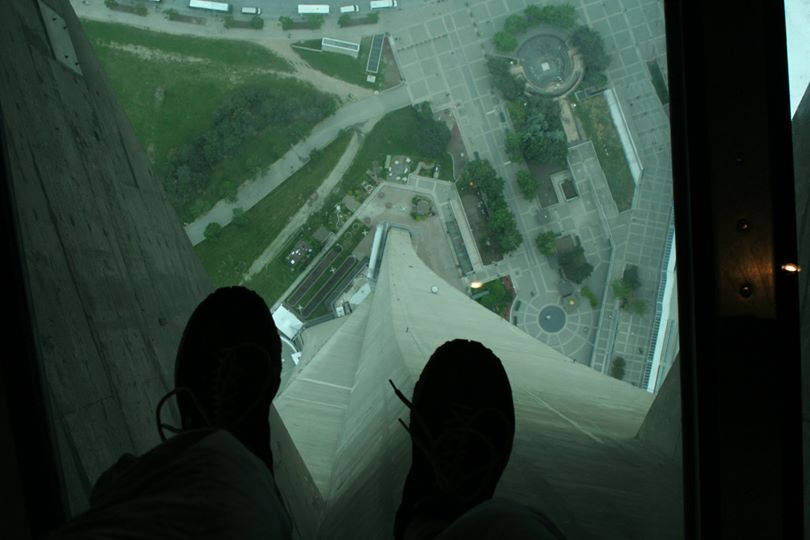
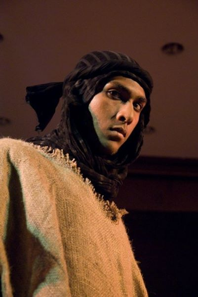

1 / 7

My greatest time in college was spent with these beautiful people. Granted this is just the few of them I worked on a monstorous project with back in 2010. I met and worked with many more. We were a part of an student club to bring environmental awareness to the University and Bangladesh.That being said, this short description doesn't do justice to my three years with them.
2 / 7

Yes, a crazy artwork pretty much explains what I was upto during my first PS class. Needless to say, I wasn't there for the lesson. I enojoy working on my personal projects as well as volunteering projects for organisations alike. I always appreciate people's gratitude.
3 / 7

My favourite hobby. I love snapping photos of anything and everything. Hardly makes me a photographer, but it was and still is a big part of my life.
4 / 7

Candid is always my style. Since candid subjects are hard to come by, I started to travel to find all kinds of cool things. Flora, fauna, architecture, landscape, portraiture you name it, I got it on my hard drive.
5 / 7

Before you ask, yes this was a fashion show by a social club. Reusing 100% left over resources from our events. I enjoy my light workouts. I used to lift at one point in my life, but now it's more body weight exercises.
6 / 7

Of course I play. I love to play. Mostly heavy stuff. Classical is good in my book too.
7 / 7

This is less about my accomplishments, rather myself being one of theirs. Proud son of two exceptionally accomplished parents.
Stay Connected!